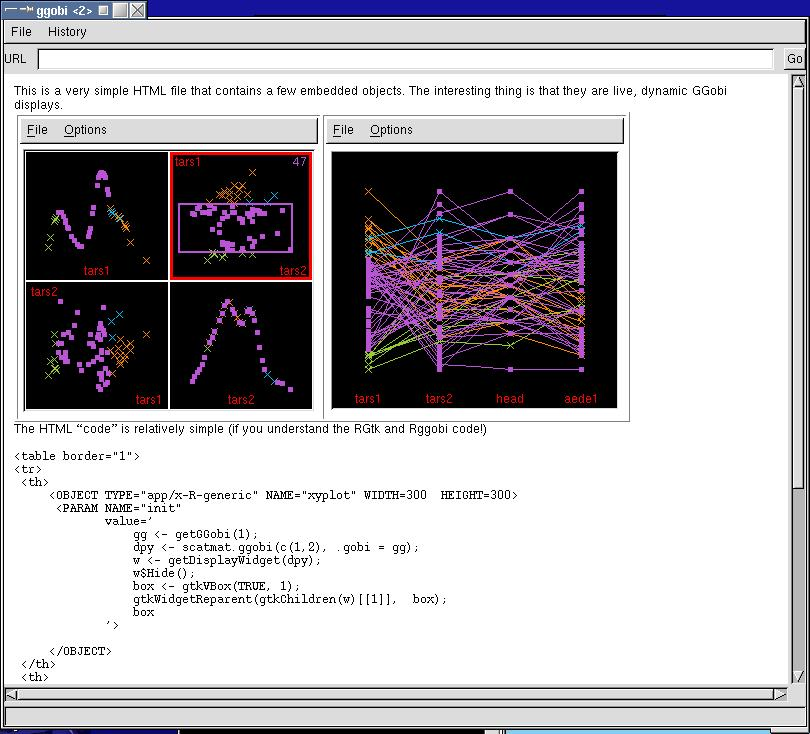
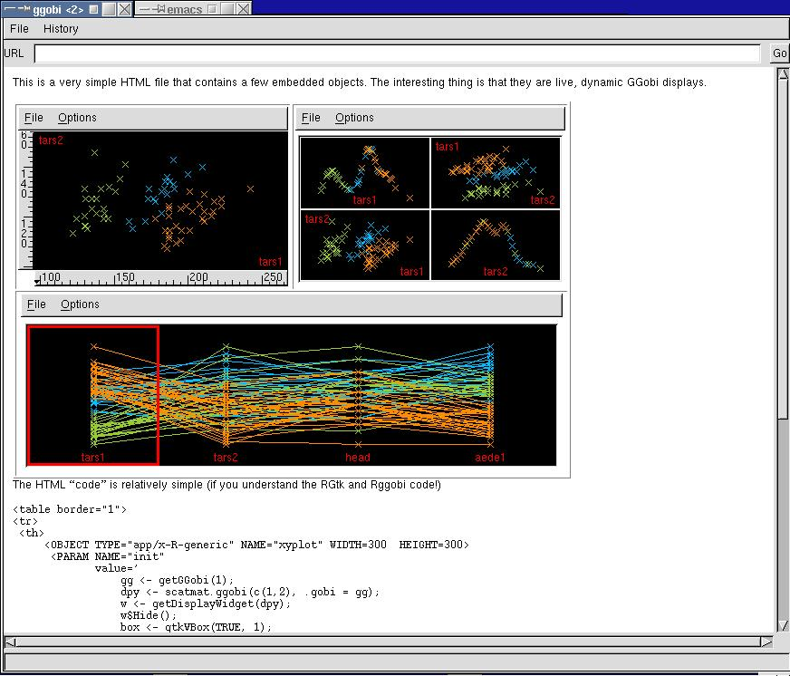

This is an example of how we embed live
GGobi displays within an HTML widget and
still have interactive facilities such as ``identify''.
This is an example of how we embed live
GGobi displays within an HTML widget and
still have interactive facilities such as ``identify''.

This example shows brushing in an embedded HTML widget
context.

And finally we show the how to layout different
displays using multiple rows in a table.
Duncan Temple Lang
<duncan@research.bell-labs.com>
Last modified: Tue Dec 18 19:50:42 EST 2001